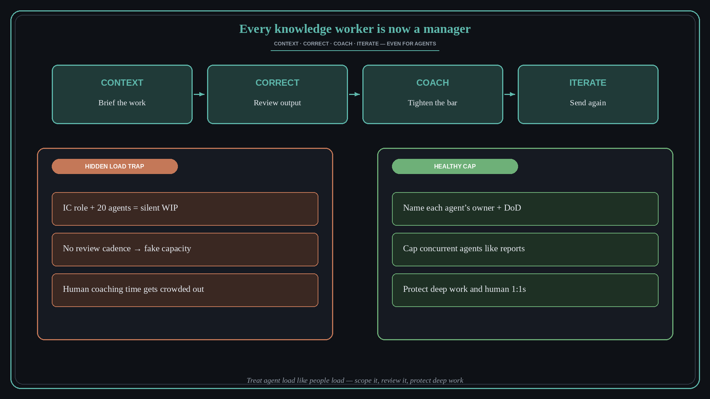

Every knowledge worker is now a manager
Source: Molly Graham (@molly_g) via Lenny Rachitsky (@lennysan)
original post · podcast
What it claims
Working with AI uses the same muscles as managing humans: give context, correct work, coach, iterate. The catch is that many ICs never chose the manager path — and now they run a stack of agents on top of their real job. If the recommended max for human reports is roughly 10–12, what happens when you add twenty agents?
Why it matters for a PO
You are already managing: clarifying intent for agents, reviewing drafts, and coaching the team on how to use them. Pretending this is “just tooling” hides WIP and burnout. Treat agent load like people load — scope it, review it, and protect deep work.
3 takeaways
- Name the management work: context, correction, coaching, iteration — even when the report is a model.
- Cap concurrent agents the way you would cap concurrent reports; more tools ≠ more capacity.
- Protect human coaching time — managers still make people feel seen; agents do not replace that.
Practice this week
Inventory your active agents and recurring AI workflows. Cut or pause anything without a clear owner, review cadence, and definition of done — same hygiene you would use for a overloaded team.